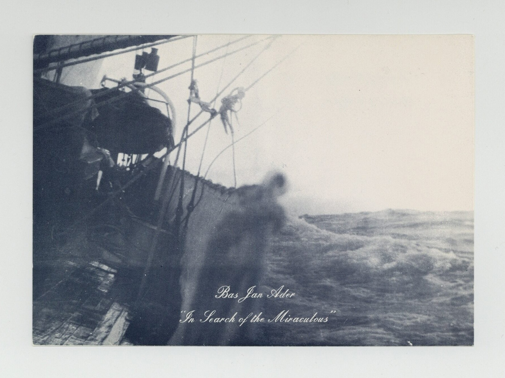

YAVUZ ERKAN
WORKS
Rosalind Fox Solomon
Mavi Blue Blau
Chromatic Senses
Chroma / Kroma
Modern Nature / Güncel Doğa
(5 parçada) umut / hope (in 5 parts)
a photograph
ateloprosopia
I'm not perfect, I'm flawed
Unorthodox Aphorisms
TEXTS
INFO

Bas Jan Ader,
In Search of the Miraculous
(22 April–17 May 1975). Invitation postcard for the artist's final exhibition at the Claire S. Copley Gallery, Los Angeles. On 9 July 1975, he departed from Cape Cod and vanished at sea.